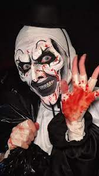
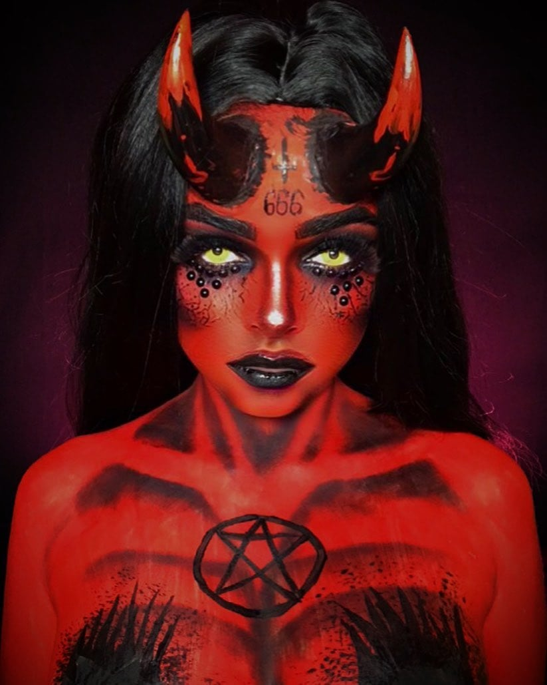

A Arte da Pintura de Halloween
As tintas corporais e faciais são essenciais para criar visuais incríveis no Halloween! Com elas, você pode se transformar em um monstro, caveira, vampiro ou personagem sobrenatural — tudo depende da sua imaginação (e um pouco de tinta vermelha 👀).
Inspirações de Pintura

Palhaços Assustadores

Demônio Vermelho

Chapeleiro Maluco
Tipos de Tintas para Usar
- Tinta à base de água: ideal para o rosto e fácil de remover.
- Tinta cremosa: excelente cobertura para pinturas detalhadas.
- Tinta neon: brilha sob luz negra, perfeita para festas à noite.
- Tinta metálica: dá um toque elegante e assustador.
Dicas de Aplicação
- Limpe bem a pele antes de aplicar a tinta.
- Use pincéis e esponjas diferentes para cada cor.
- Espere a tinta secar entre as camadas para evitar manchas.
- Finalize com spray fixador para maior durabilidade.